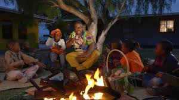
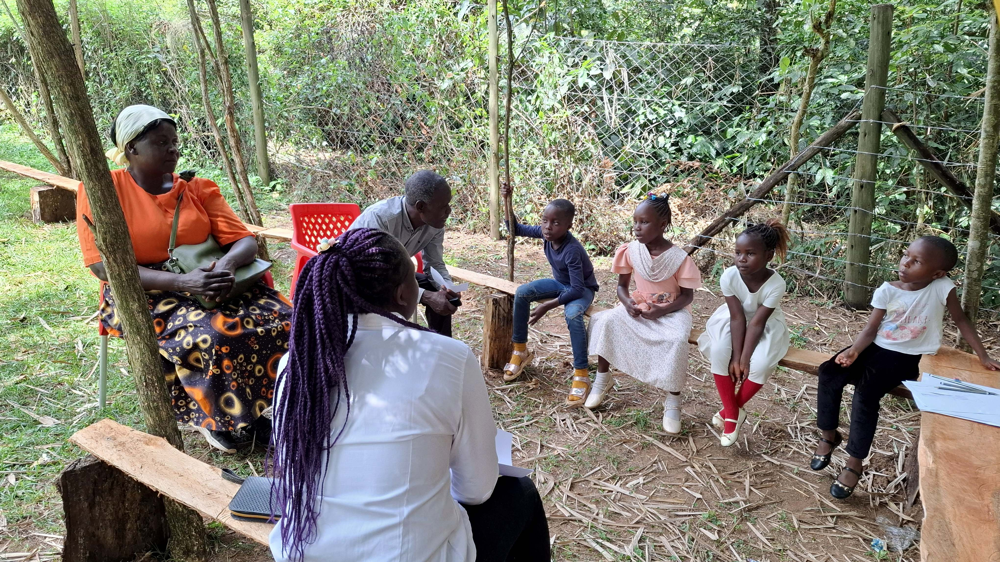

Programs
Living stories turned into community action
Explore the initiatives NASCEC uses to preserve indigenous knowledge, restore ecosystems, and mentor the next generation of cultural stewards.
Program 1
Elders' Wisdom Archives

Documenting voices, preserving heritage. We partner with community elders as our living libraries. Through respectful audio-visual recordings, we capture stories, folklore, narratives on traditional practices, and ecological knowledge that are at risk of being lost.
Activities
Scheduled storytelling sessions and interviews with elders.
Translation and transcription of recordings.
Creation of educational skits for schools and anthologies.
Program 2
Storytelling for Restoration

Every story plants a seed. This flagship environmental action program organizes community story circles where tree planting is paired with stories about each tree's cultural significance, medicinal uses, and ecological role.
Key Activities
Seasonal native tree planting drives.
Distributing seedlings during storytelling sessions.
Program 3
Cultural Ecology Festival

Celebrating our heritage, protecting our home. This annual festival is a vibrant showcase of performance, learning, and collective environmental action that brings the wider community together.
Key Activities
Traditional music, dance, interactive storytelling, and drama performances.
Exhibits on indigenous conservation practices.
Eco-friendly crafts and traditional food fairs.
Program 4
Youth Ambassador Corps (YAC)

Empowering the next generation of stewards. Young leaders are trained to bridge storytelling, environmental action, and digital communication rooted in indigenous knowledge.
Key Activities
Bi-annual workshops on leadership and indigenous knowledge.
Mentorship pairings with community elders.
Peer-to-peer environmental education in schools.
Leading mini-projects in local hubs.